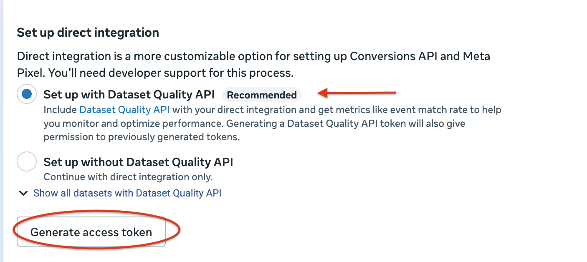
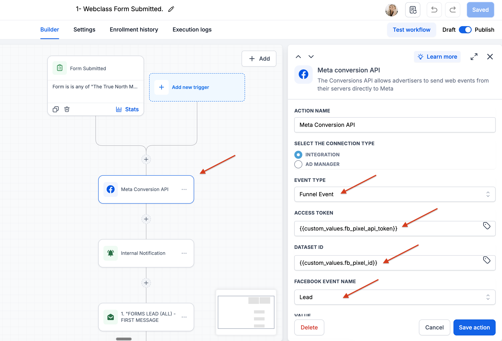

This guide assumes your Meta pixel is already created, installed in your GHL funnel, verified, and connected to your ad account. If you have not done that yet, start with the Meta Ads Setup Guide and come back here once your pixel is confirmed working.
Your Meta pixel fires from the browser. On iOS devices and browsers with privacy restrictions, that signal gets blocked — Meta never finds out someone opted in. The Conversions API (CAPI) fixes this by sending the same event directly from GHL's server to Meta, bypassing the browser entirely.
Without CAPI, Meta fills the gap by estimating conversions it couldn't confirm — which inflates your numbers and makes your optimization less accurate. With CAPI, Meta gets real confirmed data. Your numbers clean up. Your ads get smarter.
Watch this video before you start for a full visual walkthrough of how CAPI connects inside GHL: YouTube — Meta Conversion API with GoHighLevel (GHL) in 2025
This token is how GHL authenticates with Meta's server. It's different from any token you've used before — generate it directly inside Events Manager.
Go to business.facebook.com, click the grid icon at the top left, and select Events Manager.
You'll see your pixel listed. Click on its name to open it.
At the top of the pixel detail page, you'll see tabs: Overview, Events, Test Events, Settings. Click Settings.
Scroll down until you see a section labeled Conversions API. Click Set up or Manage if prompted. You'll land on a screen titled Set up direct integration with two options:
Leave the recommended option selected.
With the recommended option selected, click the Generate access token button at the bottom of that panel.

Meta Events Manager — Set up direct integration screen with Generate access token
Custom Values let you store your token and pixel ID in one place and reference them across any workflow. You set them once and they pull everywhere — no copy-pasting tokens into individual steps.
In GoHighLevel, look at the bottom of the left sidebar for a gear icon or the word Settings. Click it.
Inside Settings, scroll through the left menu until you see Custom Values. Click it. You'll see a list of any existing values — it may be empty if this is your first time here.
Click + Add or + Add Custom Value. Fill it in:
fb_pixel_api_tokenClick Save.
fb_pixel_api_token is what GHL uses to reference it inside workflows. Spelling matters. Lowercase, no spaces.
Click + Add Custom Value again. Fill it in:
fb_pixel_id2861608843982259)Click Save.
fb_pixel_api_token — your CAPI access token
fb_pixel_id — your Pixel ID number
Inside workflows, GHL references them as {{custom_values.fb_pixel_api_token}} and {{custom_values.fb_pixel_id}} — it fills in the real values automatically when the workflow runs.
This is the step that fires the server-side Lead event every time someone submits your opt-in form. It goes directly inside your existing form submission workflow.
In GHL, go to Automation → Workflows. Open the workflow that triggers on your webclass or opt-in form submission.
Click the + button between the Form Submitted trigger and the first action below it. Placing it here fires the CAPI event as close to the form submission as possible — before anything else runs.
In the action search panel, type Meta or Conversion. Select Meta Conversion API from the results.
{{ and search for fb_pixel_api_token — select it from the dropdown{{ and search for fb_pixel_id — select it from the dropdownHit Save action. Then click Publish at the top right of the workflow builder to make it live.

GHL Workflow — Meta Conversion API action with Connection Type, Event Type, Access Token, Dataset ID, and Facebook Event Name configured
This step adds server-side PageView tracking directly to your funnel so Meta receives a confirmed signal every time someone lands on your opt-in page — building your retargeting audience even for visitors who didn't opt in.
Navigate to your opt-in funnel and open it.
Inside your funnel settings, look for an Events tab or a button labeled Add Event. Click it.
Your funnel pages now fire a server-side PageView event on every visit.
If you see a Facebook Pixel ID field inside your form settings, ignore it. GHL says it directly: if the form lives inside a funnel, the funnel's tracking already handles it. Adding pixel tracking at the form level will duplicate events.
Go to your actual opt-in page and submit the form using a test name and email address.
Go back to your workflow. Click the Execution logs tab at the top. Find the most recent run and expand it. Look for the Meta Conversion API step — it should show a green success status.
You will notice the numbers in Meta Ads Manager become more consistent over the following days. The gap between what Meta shows and what your CRM actually recorded will narrow as Meta replaces estimated conversions with confirmed server-side data. Give it 48–72 hours of real opt-ins before drawing conclusions.
Every box needs to be checked before you consider this complete.
fb_pixel_api_token created in GHL Settings → Custom Valuesfb_pixel_id created with your Pixel ID number